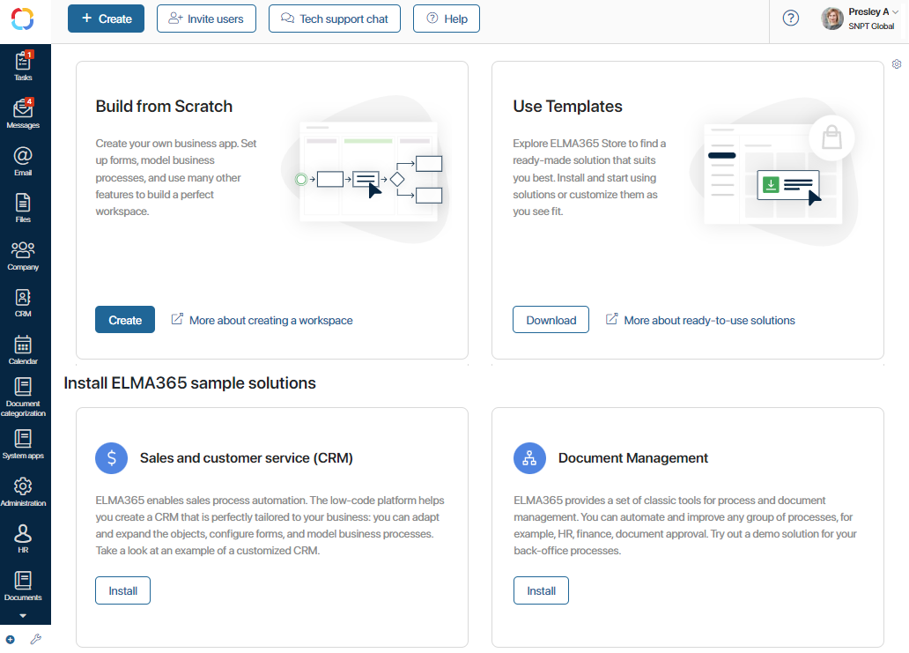
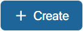
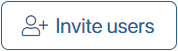
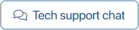
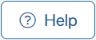
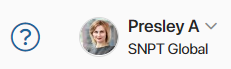

After logging in to the system, you will see the BRIX main page. Here you can start business processes, assign tasks, quickly navigate to different workspaces, or configure widgets.

начало внимание
Only Administrators can invite users, create and download solutions and customize the main page. For other users, only the + Create button is available.
конец внимание
The Get Started widget is placed on the main page by default. If necessary, you can remove it or replace it with any other widget.
You can get familiar with the system and start working with the buttons on the top panel of the page:
-  Start a business process, assign a task or create an app item.
-  Fill in the User Invite form and add a new user to your company.
-  Contact the technical support chat for SaaS version. For the On-Premises version, the button is called Tech support and leads to a portal where assistance is provided to On-Premises users.
-  Go to BRIX Help Сenter to read all necessary information about the system.
- Go to profile settings or log out.
 Remove configured widgets and change page settings.
Remove configured widgets and change page settings.
Click on the blocks in the center of the page to create workspaces from scratch, download BRIX Store solutions or install sample solutions such as CRM and Document Management.
Left menu of the main page
The pre-installed workspaces that help organize your company work are displayed on the left panel:
- Tasks. In this workspace you can check your current tasks, tasks assigned by you and tasks where you were selected as a participant. You can also create tasks, delegate them to colleagues, set deadlines for work, and monitor task progress.
- Messages. This workspace contains the Activity stream, channels, and chats. Here you chat with colleagues, share important information and files, always staying on top of the latest company events.
- Email. Click here to connect your personal email address to the BRIX mail client. Read more in Email.
- Files. Personal and corporate files and folders. In this workspace, you can create new folders and files, rename, move them to the recycle bin, etc. For each file and folder, you can configure individual access permissions.
- Company. In this workspace, you will find a list of all the system users, the upcoming birthdays, the company hierarchy and schedule compliance reports. Here you check the absence schedule and your substitutions. Heads of departments have access to the My department workspace, showing their subordinates.
- Live Chats. Set up a universal chat tool for online communication with your customers, partners, and employees. To learn more, see Live Chats.
- Calendar. This workspace displays the employee's personal calendar with scheduled events and tasks.
- Administration. In this workspace, you create an organizational chart of the company, add users, model business processes, and configure settings of the business calendar and notifications. Only users included in the Administrators group can access this section.
- CRM, System apps, Document categorization. These pre-installed workspaces contain ready-made business processes, scripts, statuses, and name templates. The System apps workspace is initially available to administrators only. Later on you can set up groups of users who will have access, too.